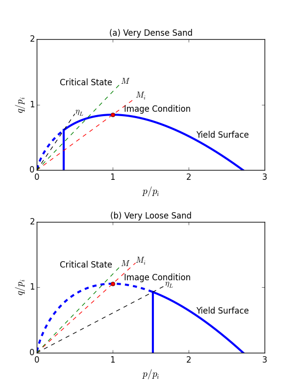
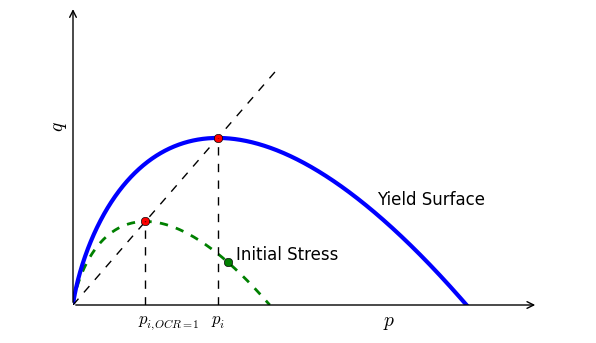

NorSand 模型*
注意
*本模型仅在 FLAC3D 中提供。
NorSand（Jefferies 1993，Jefferies 与 Been 2015）是适用于颗粒间相互作用由接触力与滑移而非黏结控制的土体的临界状态模型，它内在地包含状态参数，从而能刻画颗粒土在广泛围压与密度范围内的行为。NorSand 所需土性参数相对较少，且都较为熟悉、可由常规室内或原位试验估算。NorSand 明确刻画从极松砂的静态液化到极密砂剪胀的完整土体行为范围。
公式
弹性法则
NorSand 模型的实现中，弹性部分假定弹性剪切模量为
其中 \(p\) 为当前平均压力，\(G_{ref}\) 为材料常数。\(m\) 的有效范围为 \(0 \le m \le 1\)。\(p_{ref}\) 为参考压力（通常且默认为 100 kPa）。
对 \(m = 0\)，\(G=G_{ref}\)，对应常数弹性剪切模量。对 \(m = 1\)，\(G = (G_{ref}/p_{ref})p = I_r p\)，对应弹性剪切模量与当前 \(p\) 成线性关系、剪切刚度 \(I_r=G_{ref}/p_{ref}\) 为常数。
相应的弹性体积模量为
临界状态
临界状态要求 \(D^p=0\) 与 \(\dot{D}^p/\dot{e}_q^p=0\)，其中剪胀 \(D^p\) 定义为 \(D^p=(\dot{e}_v^p)/(\dot{e}_q^p )\)，而 \(\dot{e}_v^p\) 与 \(\dot{e}_q^p\) 分别为塑性体积应变率与塑性偏应变率。若仅 \(D^p=0\)，则为映象状态（以下标 \(i\) 表示），也常称为准稳态或相变状态。
临界状态孔隙比 \(e_c\) 可取双参数半对数形式，即
其中 \(\Gamma\) 与 \(\lambda\) 为材料常数。
临界状态孔隙比 \(e_c\) 也可取三参数幂律形式，即
其中 \(C_1\)、\(C_2\) 与 \(C_3\) 为材料常数。
状态参数
状态参数定义为当前孔隙比与临界状态孔隙比之差：
当 \(p=p_i\)（\(p_i\) 称为映象应力）时的状态参数由下式定义为 \(\psi_i\)：
屈服面
NorSand 模型的外屈服面具有原 Cam-Clay 模型熟悉的子弹状外形（图 1（Figure 1）），表示为
其中 \(p_i\) 称为映象应力，控制屈服面的大小。\(\eta = q/p\) 与 \(q = \sqrt{3J_2}\)，且 \(J_2\) 为偏应力张量的第二不变量。


图 1：NorSand 屈服面与极限应力比示意。
存在一个内帽盖，使土体不能在不屈服的情况下卸载到很低的平均应力。该内帽盖取为平面，以极限应力比 \(\eta_L\) 穿过外部屈服面，其位置取决于土体的当前参数。图 1（Figure 1） 示出极密与极松两种情形下的 NorSand 屈服面。
\(M_i\) 定义为
其中 \(M_{tc}\) 为材料常数，表示 TC（三轴压缩）条件下临界状态的 \(\eta\)；\(N\) 为 Nova（1982）的体积耦合系数；\(M\) 为考虑 Lode 角 \(\theta\) 影响的临界摩擦比，由下式给出
容易分别导出 TC 与 TE（三轴拉伸）条件下的 \(M_i\)：
按 Jefferies 与 Been（2015），\(\chi_i\) 可近似为
其中 \(\chi_{tc}\) 为材料常数。
应力剪胀
假定关联流动法则，应力剪胀可表示为
其中 \(\dot{e}_v^p\) 与 \(\dot{e}_q^p\) 分别为塑性体积应变率与塑性偏应变率。
主应力空间中塑性应变率的详细表达式略显繁复，可见 Jefferies 与 Shuttle（2005）。
外帽盖的硬化法则
映象应力 \(p_i\) 控制屈服面的大小。实现中的硬化法则定义为
其中硬化模量 \(H\) 表示为
其中 \(H_0\) 与 \(H_y\) 为材料常数。\(H_y\) 默认值为零，故此时 \(H\) 等于常数 \(H_0\)。
\(p_{i,m}\) 定义为
附加帽盖软化项 \(T_S\) 可选（例如输入 \(S=0\) 即令该项失效），\(T_S\) 的当前版本为
\(S\) 默认为 0，在不排水分析中允许取 \(0 \le S \le 1\)。\(S\) 取值越大，松散砂在不排水剪切加载中软化越快。请注意附加项 \(T_S\) 仍在开发中，使用 \(S>0\) 应谨慎。任何排水加载情形都不建议使用 \(S>0\)。
式 (14) 中最后一项 \(T_{PSR}\) 捕捉主应力旋转的影响（Jefferies 等 2015）：
其中 \(Z\) 为土性参数，\(r=\exp{(1)} \approx 2.718\) 为屈服面间距比（固定值），\(\alpha\) 为三维版本中最大主应力方向与 z 坐标参考系之间的当前夹角。为在动力模拟中刻画循环迁移性，\(Z\) 应输入正值。
内帽盖的硬化法则
实现中内帽盖的硬化法则定义为
其中 \(H_i\) 为材料参数，默认值为 5.0。内帽盖屈服总使子弹状外表面收缩变小。NorSand 采用一种合理的理想化处理：把帽盖上的应力 \(q\) 通过外屈服面镜像（Jefferies 与 Been 2015）。默认情况下（flag-inner = 关闭（off））不激活内帽盖硬化。要激活该选项，请把材料性质 flag-inner 输入为 开启（on）。请注意内帽盖硬化仍在开发中，尚需更多验证。
初始条件
NorSand 模型是应力相关模型。初始条件包括初始应力 \(\sigma_{ij,0}\)、初始状态 \(e_0\) 或 \(\psi_0\) 以及超固结比 OCR。该模型中 OCR（图 2（Figure 2））定义为当前 \(p_i\) 与计算所得 \(p_{i, OCR=1}\) 之比，使初始应力在 OCR = 1 的假定下位于屈服面上。


图 2：NorSand 模型中 OCR 的示意图。
首次赋予 NorSand 模型时应输入合理的初始应力。应力可通过命令或 FISH 函数初始化。常用做法是先用较简单的本构模型（例如线弹性或 Mohr-Coulomb 模型）运行模型生成初始应力，然后把本构模型改为 NorSand 并保留所算得的应力。由其他模型算得的应力可作为 NorSand 模型的初始应力。实现与验证的细节见 Cheng 与 Jefferies（2019）。
Acknowledgment
该模型的实现部分由 VALE S. A. 与 Inst. Tecnológico Vale 资助。
参考文献
Cheng, Z. and M. Jefferies. Implementation and verification of NorSand model in general 3D framework. in Proceedings of Geo-Congress 2020, Minneapolis, MN, ASCE (2020).
Jefferies, M.G. Nor-Sand: a simle critical state model for sand. Géotechnique, 43(1), 91-103 (1993).
Jefferies, M., and K. Been. Soil liquefaction: a critical state approach. CRC press (2015).
Jefferies, M.G., and D.A. Shuttle. NorSand: Features, calibration and use. in Soil Constitutive Models: Evaluation, Selection, and Calibration, 204-236 (2005).
Jefferies, M., D. Shuttle, and K. Been. Principal stress rotation as cause of cyclic mobility. Geotechnical Research, 2(2), 66-96 (2015).
norsand 模型性质
用以下关键字配合 设置网格单元属性（zone property） 命令设置 NorSand 模型的这些性质。
- norsand
- critical-state-1 f
- critical-state-2 f
- critical-state-3 f
临界状态参数 \(C_1\)、\(C_2\) 与 \(C_3\)，即用于确定临界状态线的参数。若 \(C_3=0\)（默认），则临界状态基于双参数方程，假定 \(C_1=\Gamma\) 与 \(C_2=\gamma\)；若 \(C_3>0\)，则临界状态基于三参数方程。
- factor-coupling f
体积耦合因子 \(N\)。默认值为 0.3。
- factor-dilatancy f
把最小剪胀与 TC 条件下相应 \(\psi\) 关联的参数 \(\chi_{tc}\)。默认值为 4.0。
- hardening-0 f
\(\psi=0\)、\(H_0\) 时的塑性硬化模量。
- modulus-annealing f
PSR 的塑性软化模量 \(Z\)。默认值为 0，表示不考虑 PSR 效应。
- shear-reference f
参考剪切模量 \(G_{ref}\)。
- ratio-critical f
TC 条件下临界状态的应力比 \(M_{tc}\)。默认值为 1.2，对应临界摩擦角 30 度。
- exponent f (a)
定义弹性的压力相关指数 \(m\)。默认值为 1.0。
- hardening-inner f (a)
内帽盖硬化的塑性硬化模量值 \(H_i\)。仅当 flag-inner = :lbool:`on` 时该值有意义。默认值为 5.0。
- index-softening f (a)
考虑 \(T_S\) 附加软化项的指标。默认为 0。允许范围为 \(0 \le S \le 1\)。\(S\) 取值越大，松散砂在不排水剪切加载中软化越快。请注意附加项 \(T_S\) 仍在开发中，使用 \(S>0\) 应谨慎。任何排水加载情形都不建议使用 \(S>0\)。
- modulus-annealing f (a)
PSR 的塑性软化模量 \(Z\)。默认值为 0，表示不考虑 PSR 效应。
- over-consolidation-ratio f (a)
超固结比 \(OCR\)。默认为 1。
- hardening-y f (a)
另一个硬化模量参数 \(H_y\)，使真实塑性硬化模量为 \(H=H_0+H_y\psi\)。默认值为零。
- pressure-reference f (a)
参考压力（通常为标准大气压）\(p_{atm}\)。若以 kPa 计，默认值为 100.0。该参数应始终以标准大气压为参照，无需额外标定。其取值应以与模拟中其他参数一致的应力/压力单位输入。
- poisson f (a)
泊松比 \(\nu\)。默认值为 0.2。
- stress-xx-initial f (i)
有效应力的初始 xx 分量 \(\sigma^0_{xx}\)。该参数不会更新。
- stress-yy-initial f (i)
有效应力的初始 yy 分量 \(\sigma^0_{yy}\)。该参数不会更新。
- stress-zz-initial f (i)
有效应力的初始 zz 分量 \(\sigma^0_{zz}\)。该参数不会更新。
- stress-xy-initial f (i)
有效应力的初始 xy 分量 \(\sigma^0_{xy}\)。该参数不会更新。
- stress-yz-initial f (i)
有效应力的初始 yz 分量 \(\sigma^0_{yz}\)。该参数不会更新。
- stress-xz-initial f (i)
有效应力的初始 xz 分量 \(\sigma^0_{xz}\)。该参数不会更新。
- state-parameter-initial f (i)
初始状态参数 \(\psi_0\)。若 \(e_0 \le 0\)，则初始状态由该初始状态参数表示，\(e_0\) 由 \(\psi_0\) 计算。该参数不会更新。
- void-initial f (i)
初始孔隙比 \(e_0\)。若 \(e_0 \ge 0\)，则初始状态由该初始孔隙比（而非初始状态参数）表示，\(\psi_0\) 由 \(e_0\) 计算。该参数不会更新。
- angle-psr f (r)
最大主应力方向与 z 坐标参考系之间的当前夹角 \(\alpha\)。
- bulk f (r)
当前弹性体积模量 \(K\)。
- shear f (r)
当前弹性剪切模量 \(G\)。
- ratio-image f (r)
TC 条件下映象状态的当前应力比 \(M_{i,tc}\)。
- stress-image f (r)
当前映象应力 \(p_i\)。
- stress-image-maximum f (r)
当前允许的最大映象应力 \(p_{i,max}\)。
- state-parameter f (r)
当前状态参数 \(\psi\)。
- state-parameter-image f (r)
用于映象应力的当前状态参数 \(\psi_i\)。
- void f (r)
当前孔隙比 \(e\)。
图例
- (a) 高级属性。
- 该属性具有默认值；在较简单的模型应用中，无需专门赋值。
- (i) 初始性质。
- 该性质一旦初始化（首次输入）便不再更新。
- (r) 只读属性。
- 该属性不能由用户设置，但可以列出、绘图显示，或通过 FISH 访问。
| 这些内容对您有帮助吗？… 版权与免责声明 |
FLAC3D © 2019, Itasca | 原文更新于 2020 年 10 月 8 日 |